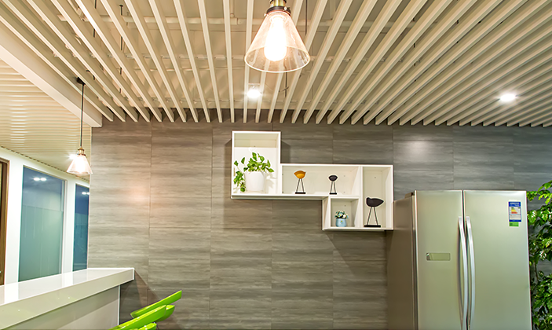
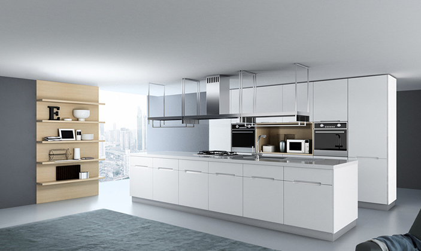

打造优质厨具设备的关键在于其制造工艺，对于厨具设备来说多样化、高效率的激光切割机在厨具设备加工方面有着得天独厚的优势。厨具设备行业包含的产品种类多而杂，大到烟机灶具，小到锅碗瓢盆，基本上都是以不锈钢材料为主，而打造优质厨具设备的关键在于其制造工艺。厨具设备传统加工都是以数控冲床为主，在配合抛光、剪板折弯等多道工序才能成型，这样的加工方式工作效率低，模具消耗大、使用成本高等缺点一直困扰着厨具设备厂家。
对于厨具设备来说，钣金件品种多，产品更新换代快。因此，多样化、高效率的激光切割机在厨具设备加工方面有着得天独厚的优势。激光MARVEL6000系列数控光纤激光切割机，引进国际一流数控系统和伺服电机，集成自主研发的专用激光切割操作系统操作更灵活，能够完成任何外形的板材切割，不只加工速度快、效率高、本钱低，而且不需模具或刀具改换，缩短了准备时间周期。
最重要的一点在于激光切割机切割精度高，而且断面光滑，无应力变形，省去了厨具钣金二次加工的工序，并提升了厨具设备的成品率，真正有效的提高了产品品质和生产周期，为企业节省更多的成本，保证了产品在价格方面的优势。